"이란 전쟁 때문이 아니었다" 천연가스 가격 올라간 진짜 범인의 정체
▶ 원본 영상 보기한눈에 보기
- 천연가스 가격이 국제 유가보다 더 올라 1 MMBtu당 30달러를 넘었고, 석탄으로 갈아타는 '수요 파괴선' 35달러에 다가섰다는 영상이다.
- 1차 원인은 호르무즈 봉쇄로 카타르 LNG가 빠진 것이지만, 10월 급등의 진짜 범인은 여름에 가스를 저장하지 않은 유럽, 특히 독일이라고 본다.
- 유럽은 민간 '쉬퍼'가 싼 여름에 사서 겨울에 파는 구조인데, 선물이 현물보다 싸지자 손실을 피하려 저장을 멈춰 11월 1일 저장률이 74.6%에 그쳤다.
- 모자란 약 20%(1,400~1,500만 톤)를 겨울 현물시장에서 사야 해 월 300만 톤의 새 수요가 생겼고, 미국 증산은 액화 터미널 한계로 이를 못 채운다.
- 한국은 장기계약도 현물 연동이어서 가격 충격을 그대로 받고, 전력 도매가(SMP) 상승을 한전이 떠안는 식으로 물가 압력이 온다는 주장이다.
이런 분께 도움이 됩니다
- 겨울 가스비·전기요금과 물가 흐름이 궁금한 직장인.
- LNG·에너지·유틸리티 관련 주식 투자자로, 유럽 가스 저장률과 미국 LNG 수출 데이터를 어떻게 읽는지 알고 싶은 분.
- "전쟁 끝나면 가격 내려가겟지"가 왜 틀렸는지 구조로 이해하고 싶은 분.
핵심 내용
결론: 적어도 내년 3월까지는 더 오를 수 있다
- 김상훈 기자의 주장은 11월부터 내년 3월까지 가격이 30달러를 넘어 수요 파괴선 35달러 언저리에서 오갈 것이라는 것이다. 더 올라도 전혀 이상하지 않다고 본다. (29:33, 32:35)
- 가격이 공급 부족(카타르)에 수요 충격(유럽 현물 매수)까지 겹친 결과라, 둘 중 하나가 풀려야 꺾인다.
- 내년 1분기를 넘기면 유럽의 LNG 매수 수요가 줄어 상황이 가라앉을 수 있다는 전망도 함께 말한다.
💡 "유가 청구서는 이미 왔고, 가스 청구서가 이제서야 날아오기 시작했다."
🔁 올해 천연가스 가격 추이 (JKM·유럽 현물 기준)
- 전쟁 전 10달러
- 봉쇄 후 15달러
- 6월 20달러 돌파
- 8월 30달러 근접
- 10월 재급등
- 1전쟁 전 10달러
2023년부터 이란 전쟁 직전까지 1 MMBtu당 약 10달러의 장기 안정 구간 (1:57)
- 2봉쇄 후 15달러
카타르 공급 차질로 잠깐 올랐다가 약 15달러 선에 머묾. 상승폭 50%지만 큰 뉴스는 안 됨
- 36월 20달러 돌파
6월부터 차분히 올라 20달러를 넘김
- 48월 30달러 근접
7~8월 무렵 30달러 근처까지 상승 후 9월에 조정
- 510월 재급등
10월부터 가파르게 올라 현재 30달러 이상, 수요 파괴선 35달러 근접
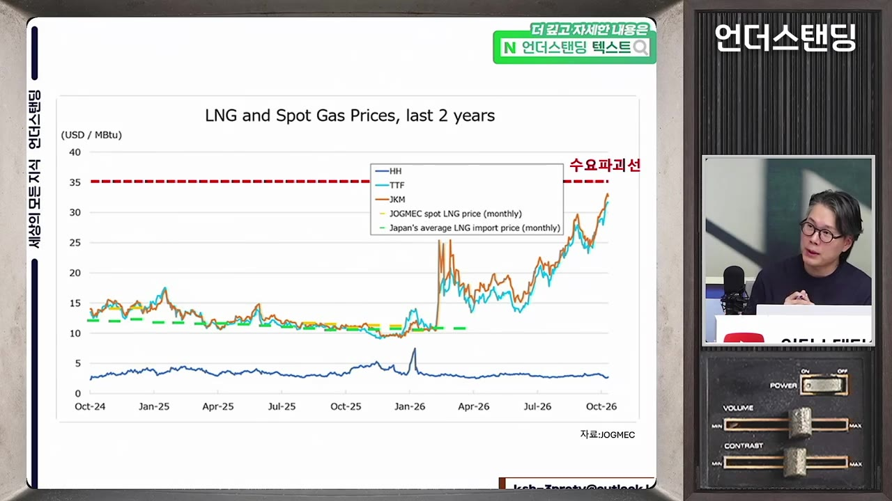
- 수요 파괴선(35달러): 가스가 너무 비싸 발전소가 탄소 배출이 많아도 석탄으로 바꾸는 가격대. 중국처럼 석탄 전환이 쉬운 나라에서 일어나고, 한국은 바로 전환하기 어렵다.
- 미국 헨리허브 가격은 완전히 다른 낮은 수준이다. 미국 내 생산이 넘치기 때문이다.
1차 원인: 호르무즈 봉쇄로 카타르 LNG가 사라졌다
- 3월부터 중동 천연가스 생산량이 급감했다. 월평균 약 1,600만 톤 감소로, 전 세계 생산량의 약 6%다. (5:20)
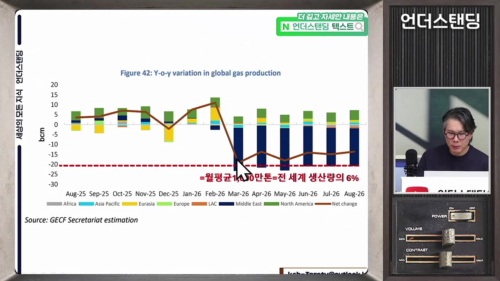
- 한국 연간 사용량은 약 4,600만 톤, 월평균 약 380만 톤. 사라진 물량은 한국 사용량의 약 4배다.
- 카타르가 주도하는 가스수출국포럼(GECF, OPEC의 가스 버전) 수출은 3월부터 약 30% 급감했다. 카타르 9월 수출은 전년 약 600만 톤에서 약 100만 톤으로, 500만 톤 줄었다. (6:52)
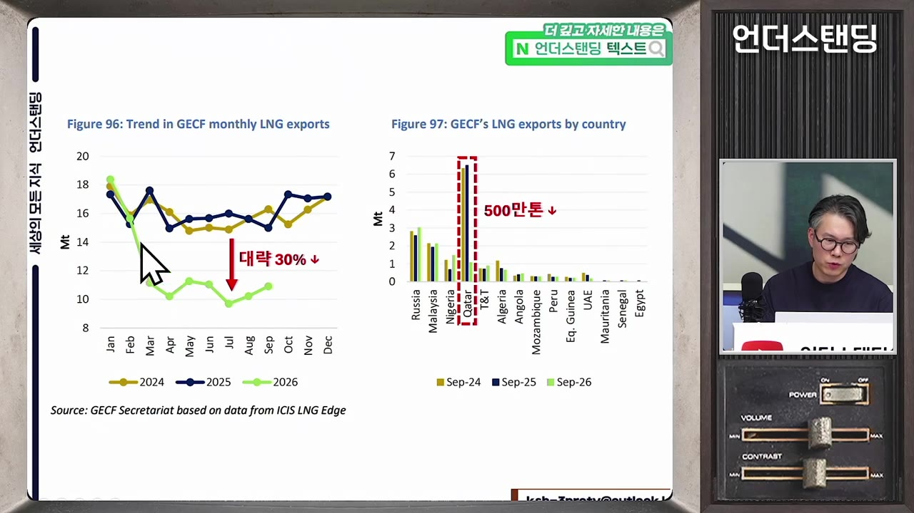
- 그러나 전 세계 전체 공급은 2.7%만 줄어 원유보다 상황이 덜했다. 한국은 카타르 대신 호주·브라질·미국에서 조달하고 있다.
미국이 절반을 메웠지만 터미널이 한계다
- 미국 LNG 수출은 2025년 3분기 388억 ㎥에서 올해 3분기 월평균 약 220만 톤 늘어, 카타르 결손의 약 45%를 채웠다. 캐나다·브라질 증산도 더해져 8~9월까지는 20달러 선에서 버텼다. (7:36)
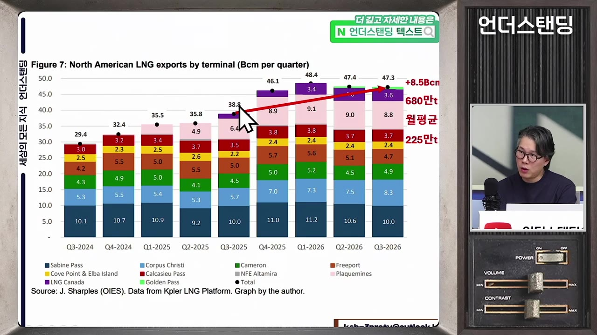
- 미국 에너지정보청(EIA)은 올해 LNG 수출이 전년 대비 23% 늘었다고 발표했다. 하지만 월별로는 횡보한다. (30:19)
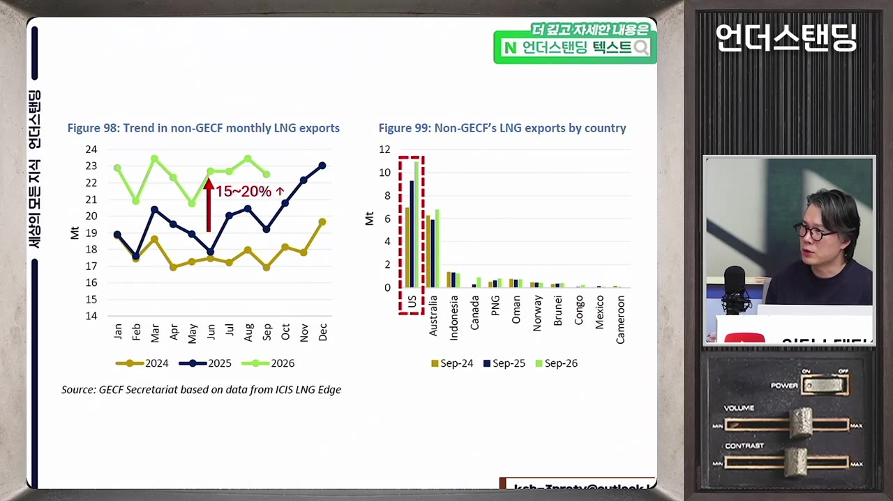
- 이유는 액화 터미널 용량. 생산량이 많아도 터미널을 통과하는 만큼만 나간다.
- 터미널은 빠르게 늘고 있지만 정비·겨울 휴지기 때문에 100% 가동은 못 하고, 이미 거의 최대로 돌리고 있다.
- EIA 전망상 4분기·내년 1분기 증가 기울기로는 유럽의 월 300만 톤 수요 충격을 채우지 못한다는 판단이다.
💡 미국은 팔고 싶어도 터미널만큼만 팔 수 있다.
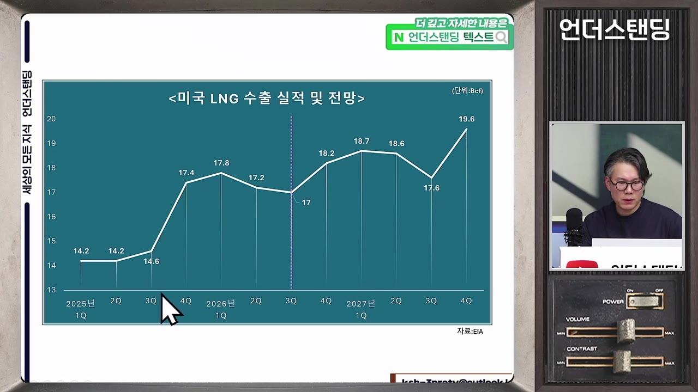
진짜 범인: 유럽이 여름에 저장을 안 했다
- 유럽은 동북아처럼 겨울에 사오는 게 아니라, 여름에 남는 가스를 지하 저장고에 넣고 겨울에 뽑아 쓰는 구조다. 저장 주입량은 4~10월 플러스, 11월부터 마이너스로 바뀐다. (9:30)
- 유럽 공급선은 네 갈래: 역내 생산(북해), 파이프라인 가스(노르웨이·알제리, 러시아는 우크라이나 전쟁 뒤 거의 끊김), 미국산 LNG, 그리고 저장 시설이다.
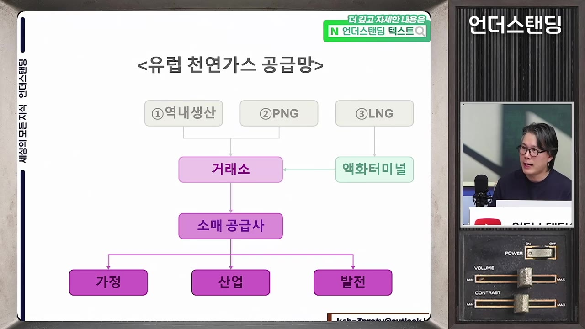
- 네 번째 갈래를 움직이는 주체가 '쉬퍼'(shipper, 저장고·배관을 소유하지 않고 가스를 사서 보관료를 내고 넣어 두다가 비쌀 때 파는 민간 사업자)다. 이 플레이어 하나가 멈춘 것이 핵심이다. (12:58)
- 올여름에는 가스값이 전쟁 전의 두 배라 쉬퍼가 저장을 꺼렸다. 결정적 근거는 8월물과 1월물의 스프레드 역전이다.
- 보통은 현물(8월물)이 비싸고 선물이 싸야 정상인데, 1월물이 더 싸졌다. 지금 사서 보관하면 겨울에 손해가 확정되는 구조여서 쉬퍼 입장에선 저장할 이유가 없었다.
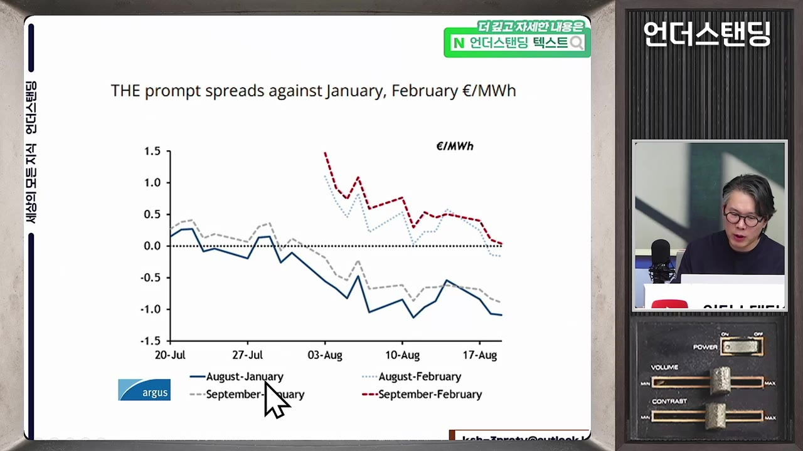
- 진행자 비유: 유가 떨어지길 기다리다 비행기표가 더 비싸진 것과 같다.
💡 전쟁이 끝나면 싸질 거라는 베팅이, 겨울 저장고를 비워 놓았다.
🔁 유럽 가스 저장 1년 주기
- 4~10월 주입
- 11월부터 인출
- 3월 말 바닥
- 다시 주입
- 14~10월 주입
여름 남는 가스를 저장고에 넣음. 11월 1일 전까지 100% 가까이 채우는 게 보통
- 211월부터 인출
겨울 수요에 맞춰 저장고에서 뽑아 쓰기 시작
- 33월 말 바닥
저장률이 20~30%대까지 내려감. 보통 저장고의 약 60%를 겨울에 쓴다
- 4다시 주입
봄부터 같은 사이클 반복
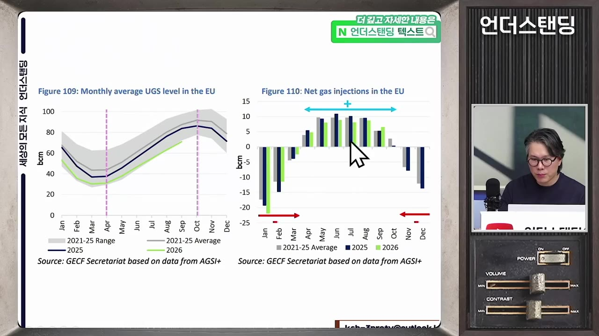
숫자로 보는 유럽 저장률
- 11월 1일 저장률은 평년 100% 근처여야 하는데 올해는 74.6%다. (15:34)
| 기준 | 저장률 |
|---|---|
| 2024년 평균(11월 초) | 98.5% |
| 2025년 평균(11월 초) | 82.9% |
| 2026년 9월 말 | 약 70% |
| 2026년 11월 1일(유럽 전체) | 74.6% |
| 이탈리아 | 약 90% (의무 비율 수준) |
| 독일 | 61.5% (자막상 "12월 1일 기준"이라 하지만 문맥상 11월 초로 보임) |
| 네덜란드 | 독일과 비슷 |
- 독일·이탈리아·네덜란드가 저장 용량 1·2·3위다. 1위·3위가 60%대라 유럽 평균이 75%로 끌려 내려왔다.
- 독일 하나가 아니라 유럽 전체 비축이 중요하다. 독일이 100% 채워도 다른 나라가 비면 파이프라인으로 끌어가기 때문이다.
- 지난해엔 독일이 채워 두자 저장이 부족한 체코·오스트리아가 사 갔고, 독일은 국외 판매에 부과금을 매겨 막았다. (27:15)
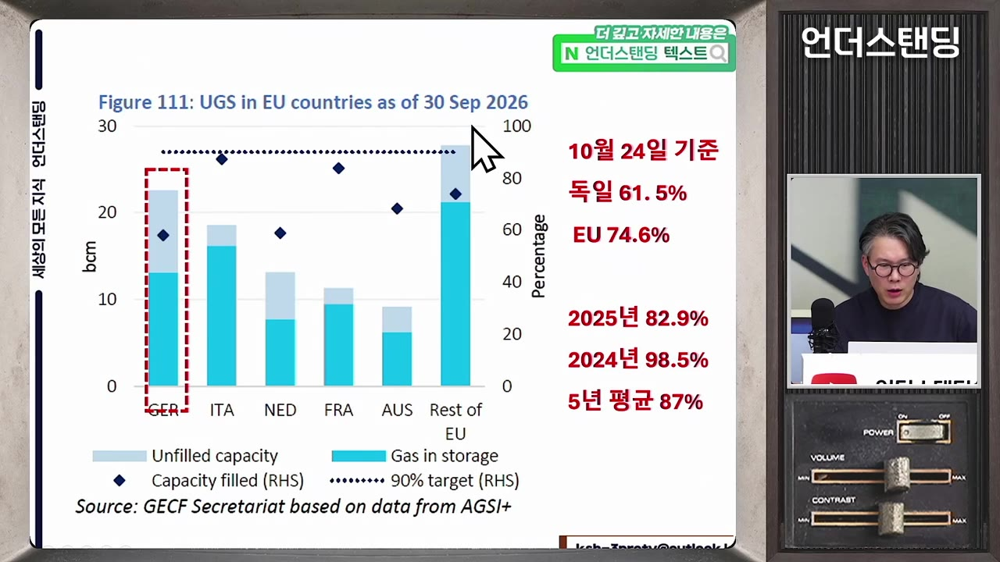
왜 저장률 15%도 못 믿는가
- 평균치 계산으론 75%에서 60%를 써도 15%가 남지만, 겨울 인출량은 '겨울 수요 − (역내 생산 + 파이프라인 수입 + LNG 수입)'으로 결정된다. 갑자기 추워지거나 LNG 수입이 줄면 인출이 늘어 25%가 더 날아갈 수 있다. (17:32)
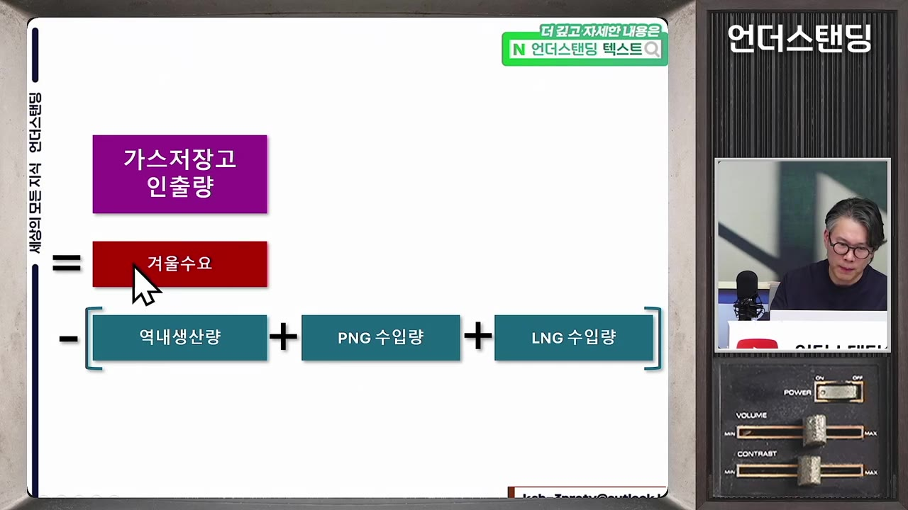
- 전력 예비율을 15~20% 두는 것처럼 가스도 버퍼가 필요하다.
- 유럽 지하 저장 시설은 두 종류인데 다공질형이 문제다. (21:14)
| 종류 | 구조 | 특성 |
|---|---|---|
| 암염 공동형 | 암염층에 물을 넣어 녹인 큰 빈 공간에 가스 주입 | 넣고 빼기가 쉬움 |
| 다공질형 | 다 뽑아낸 옛 가스전의 바위 틈새에 가스를 다시 스며들게 함 | 빨리 넣으면 압력이 올라 주입 속도가 떨어지고, 15% 수준으로 떨어지면 압력이 낮아져 하루 필요량을 뽑지 못함 |
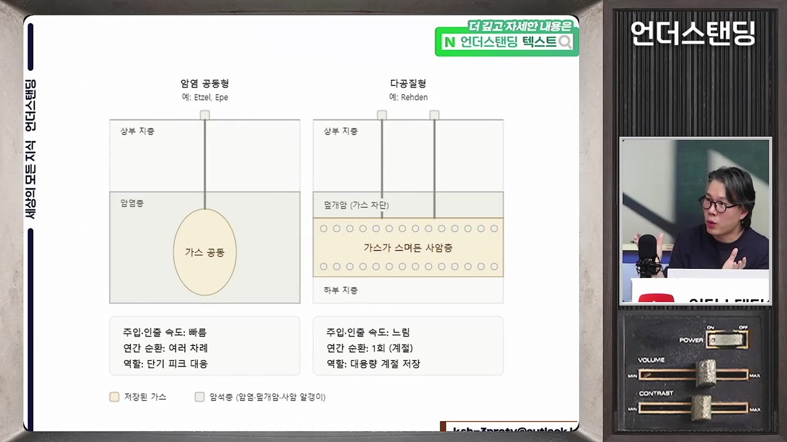
- 그래서 저장률은 0%까지 못 내려가고, 바닥 근처 재고는 "숫자만 남은 재고"다. 정확한 한계 비율은 취재되지 않았다고 밝힌다.
- 현물로만 버티면 가격이 폭등한다. 원래 겨울 현물시장은 동북아 국가들 무대였는데 유럽이라는 큰 덩치가 갑자기 뛰어들었기 때문이다. 유럽은 이 가격이 거의 실시간으로 전기·가스요금에 반영된다.
나라별 제도 차이: 이탈리아·프랑스는 보완, 독일은 방치
- 우크라이나 전쟁 뒤 EU는 11월 저장률 90%를 법으로 정했지만, 못 맞추면 기준을 낮춰 주는 '허울뿐인 규제'가 됐고 민간은 지킬 이유가 없어졌다. (23:08)
| 나라 | 제도 | 결과 |
|---|---|---|
| 이탈리아 | 재고 보유 보상. 여름에 비싸도 저장하면 손실을 국가가 보상 | 약 90% 달성 |
| 프랑스 | 손실을 이용자에게 전가 허용 + 비축 의무 미달 시 벌금 | 비교적 유지 |
| 독일 | 철저한 민간 중심, 보상 없음 | 61.5% |
- 독일이 보완을 안 한 이유는 기자 추정으로, 2023~2026년 초까지 가스가 워낙 싸고 안정적이라 "여름 싸고 겨울 비싼 시장 구조만으로 비축이 맞춰질 것"이라 봤기 때문이다. 러시아 파이프라인에 의존하던 습관도 거론된다. (25:42)
- 한국은 가스공사가 해외에서 사서 배급사에 파는 단순 구조여서, 공기업이 손해를 보더라도 안보 차원에서 확보한다. 유럽과 가장 다른 지점이다.
겨울 시나리오와 변수
- 유럽 저장 용량은 약 7,500만 톤(영국 포함 8,000만 톤). 20% 미달분이 1,400~1,500만 톤이고, 11~3월 5개월로 나누면 월 약 300만 톤의 추가 수요다. 카타르 공백에 이 수요 충격이 겹쳤다. (28:46)
- 변수 1, 중국의 석탄 전환: 동아시아 수입량 변화를 보면 중국·일본은 꽤 줄었고 한국은 거의 비슷하다. 중국은 가스 발전소가 적어 줄이기 쉽지만, 한국·일본은 가스 발전 비중이 커 줄이기 어렵다. (33:21)
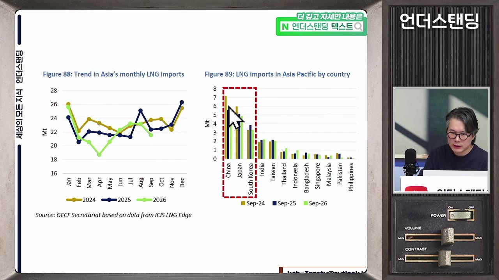
- 변수 2, 날씨: 올겨울은 슈퍼 엘니뇨로 따뜻할 것이란 전망이 많지만, 갑자기 추워지면 LNG 가격이 한 번 더 뛸 수 있다.
- 변수 3, 종전: 호르무즈가 뚫리면 카타르 액화 시설이 일부 파괴됐더라도 상당 부분 해결된다. 2029년 공급 과잉이 예상되던 것이 2028년으로 당겨질 수도 있다. 다만 내년 1분기 안에 그런 일이 생길지는 회의적이다. (35:15)
미국의 가스 패권이라는 시각
- 기자가 "개인적 음모론"이라 전제한 견해다. 우크라이나 전쟁으로 미국 LNG가 유럽 시장을 먹었고, 이란 전쟁으로 세계 시장을 장악했다. (36:46)
- 미국 LNG 시장 점유율은 과거 미미했다가 우크라이나 전쟁 후 20~30%, 이란 전쟁 후 약 35%로 올라왔다.
- 가스 패권만 보면 트럼프가 전쟁을 서둘러 끝낼 이유가 없다는 것이지만, 물가·선거를 고려하면 이것만으로 전쟁을 결정할 수는 없다고 덧붙인다.
한국은 도망갈 곳이 없다
- 장기계약을 맺었으니 안전하다는 생각은 틀렸다. 30년 장기계약도 가격은 현물에 ±α로 연동하는 '물량 계약'이라 현물이 오르면 도입가도 오른다. (38:41)
- 평시 한국은 장기 7 : 현물 3이었으나, 장기 물량의 대부분이 카타르·호주여서 카타르가 막힌 지금은 현물 비중이 크게 늘었을 것으로 본다. 가격 충격에 수급 충격까지 받는 상황이다.
- 한국 저장 시설은 지하 가스전이 없어 탱크뿐이다. 비축량 약 500만 톤은 월 사용량 380만 톤 기준 한 달 반 치다. 그래서 겨울마다 왕창 사야 하고 장기계약도 불가피하다. (40:57)
- 전력 도매가(SMP)는 가장 비싼 가스 발전소가 결정한다. kWh당 100~120원에서 오가다 8월 148원까지 뛰었고, 10월 다시 오를 수 있다. 전기요금은 한전이 대신 떠안아 바로 오르진 않지만 한전 재무는 나빠진다. (41:42)
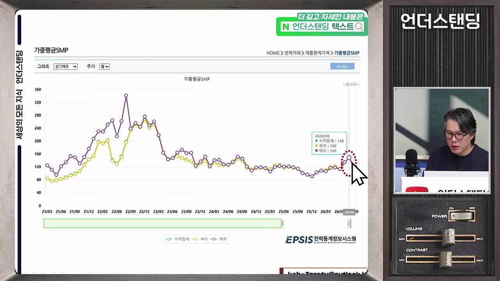
- 독일 최대 저장 시설은 여의도 8배 면적, 깊이 2km, 독일 3주분을 담는 옛 내륙 가스전이다. 한국엔 그런 지형이 없다.
💡 공기업이 버퍼를 막아 주는 대신, 충격은 한전·가스공사 재무와 물가로 돌아온다.
대안 논의: 러시아 파이프라인·대왕고래
- 러시아 파이프라인과 동북아 슈퍼그리드는 수십 년 전부터 나온 얘기지만, 북한을 지나거나 동해를 건너야 하고 당사국 간 신뢰 자본이 없어 "우리 죽기 전엔 보기 힘든 프로젝트"라는 게 기자 의견이다.
- 대왕고래 가스전은 정치적 때가 타서 현 정권이 들여다보지 않는다고 본다. 오일 메이저 우선협상대상자 선정 '예정' 기사까지는 봤고, 선정 완료 기사는 보지 못했다고 한다. (44:20)
기억할 숫자·인용
- 수요 파괴선: 1 MMBtu당 35달러. 현재 30달러 초과.
- 중동 생산 감소: 월 1,600만 톤(세계 6%). 카타르 9월 수출 600만→100만 톤.
- 한국 LNG 사용: 연 4,600만 톤, 월 380만 톤. 비축 500만 톤(한 달 반).
- 미국: 카타르 결손 45% 보전, 수출 전년비 +23%, 세계 점유율 약 35%.
- 유럽 저장률(11/1): 74.6%. 독일 61.5%, 이탈리아 약 90%. 2024년 98.5%.
- 유럽 저장 용량 7,500만 톤 → 미달 1,400~1,500만 톤 → 월 300만 톤 수요 충격.
- SMP: 100~120원 → 8월 148원(kWh당).
- 공급 과잉 전환 예상: 2029년(종전 시 2028년 가능).
- "유럽도 조금 싸게 사려고 뒤로 미루다가 결국 이 꼴이 난 거잖아요." (진행자, 46:35)
생각해볼 점
- 영상의 가격 전망(내년 3월까지 35달러 언저리)은 기자 개인 판단이며, 겨울 기온·중국 수요·종전 여부에 따라 크게 달라진다고 영상 스스로 인정한다. 투자 판단 근거로 쓰기엔 변수가 많다.
- 독일 저장률 61.5%의 기준일이 자막상 "12월 1일"로 나오는데, 영상 녹화 시점(11월 초)과 맞지 않아 11월 1일의 오류로 보인다. 원 자료 확인이 필요하다.
- 다공질형 저장고에서 인출이 어려워지는 정확한 저장률 임계치는 "취재되지 않았다"고 밝힌 부분이라, 15%가 실제 한계인지는 확인되지 않은 추정이다.
- '미국 가스 패권' 해석은 기자가 음모론이라 전제한 개인 견해다. 사실로 받아들이기보다 하나의 관점으로 보는 게 맞다.
바로 해볼 일
- 유럽 가스 저장률(AGSI 등 공개 지표)과 미국 EIA LNG 수출 통계를 어디서 보는지 찾아 즐겨찾기해 두기.
- 이번 겨울 가스·전기요금 고지서를 지난해 같은 달과 비교해 체감 변화를 기록하기.
- 보유 중인 에너지·유틸리티·발전 관련 자산이 있다면 LNG 가격 연동 구조(장기계약·현물 비중)를 점검하기.